Case study · UX design · AI product
Tripmix
A travel app where anyone can plan, share and sell trips, taken from first idea to the App Store.
Section 1
Measurable outcomes
I shipped the creator storefront and won the founders over to hosted trips. When hosts arrived, sales took off: they sell $2K trips on Tripmix, and Tripmix earns a commission.
- App Store impressions, November 2025
- 8,070
- App Store conversion rate
- 7.24%
- sessions per active device
- 3.39
- of downloads came from App Store search
- 59%
- downloads in November 2025
- 450
- countries those downloads came from
- 5
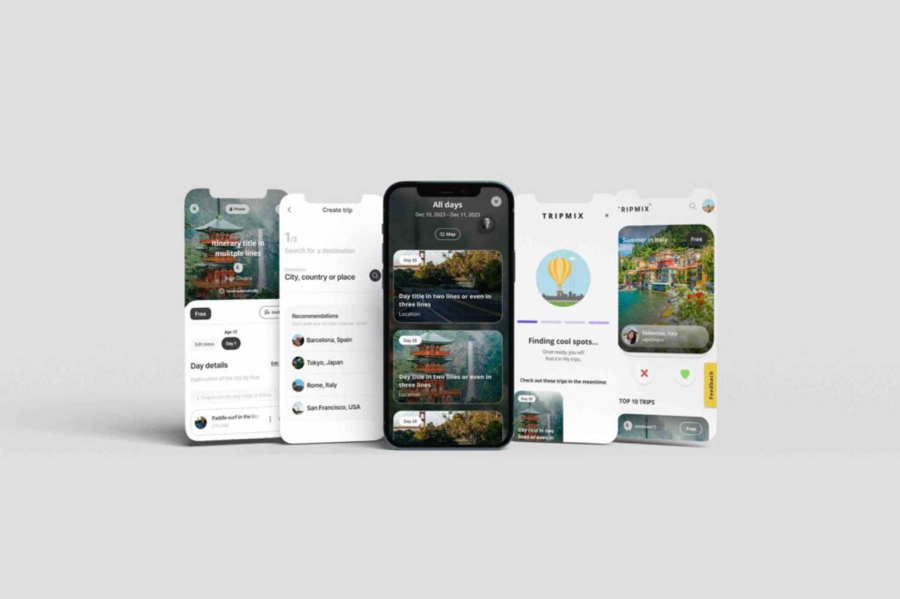
Section 2
Every traveller a creator
Tripmix lets you discover, plan and share trips, powered by AI and itineraries from its community, and lets passionate travellers sell what they know.
As founding designer I defined the product roadmap, scoped backend requirements and led the design team, owning the whole lifecycle from concept to App Store launch.
- A $1.8 billion global travel itinerary app market
- Launched on the App Store in July 2024
- 500 downloads in the first month


Section 3
Following the money
We interviewed emerging travel influencers, studied the trip before, during and after, and ran a SWOT and competitor comparison to find the gaps.
The founder wanted a marketplace for influencers. I made the case early that hosted group travel was the stronger business, and showed the numbers.
- A $10 to $15 PDF itinerary needs huge volume to matter
- One hosted trip, 8 to 12 people at $2K to $5K each, earns $24K to $60K
- The founder kept both paths, and I committed to delivering both
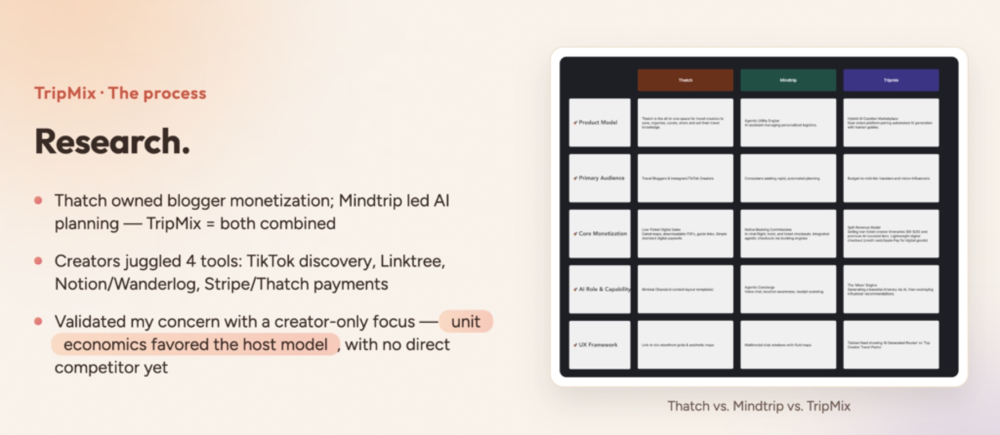
Section 4
Two leaders, one gap
Thatch owned blogger monetisation and Mindtrip had a head start on AI planning. Tripmix combined both. In 2025 Mindtrip acquired Thatch.
- Creators juggled four tools: TikTok, Linktree, Notion or Wanderlog, and Stripe or Thatch
- The unit economics favoured hosts, and no one served them directly yet
Section 5
Solo planning isn't broken. Group travel is.
For half a year I kept making the case, with numbers, competitor analysis and my own field research. People enjoy planning solo trips and often just ask AI.
Group travel was chaos: coordination scattered across WhatsApp threads and improvised Google Sheets, with no tool owning it.
The founder came on board, we interviewed hosts already leading trips, and they loved having every customer touchpoint in one app. Tour guides and operators now sell full group trips on Tripmix.
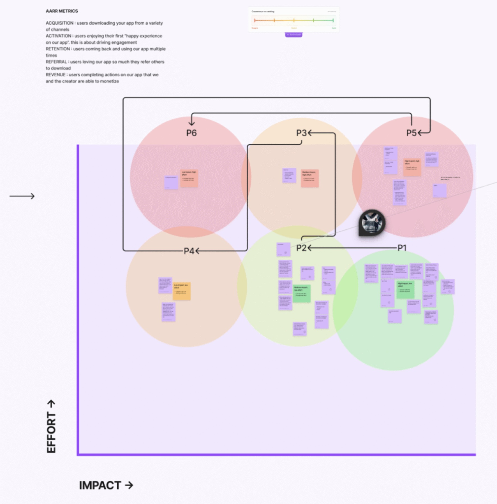
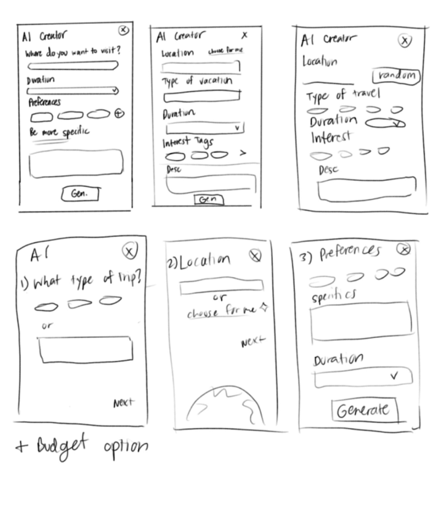
Section 6
Ranked, then sketched
We brainstormed in FigJam, ranked ideas with AARRR (acquisition, activation, retention, revenue, referral) and sorted them on an impact versus effort matrix.
- Led prioritisation and owned the product roadmap
- Designed app screens hands-on with the developer
- Mentored two junior designers
- Kept testing ideas with travellers in my own network
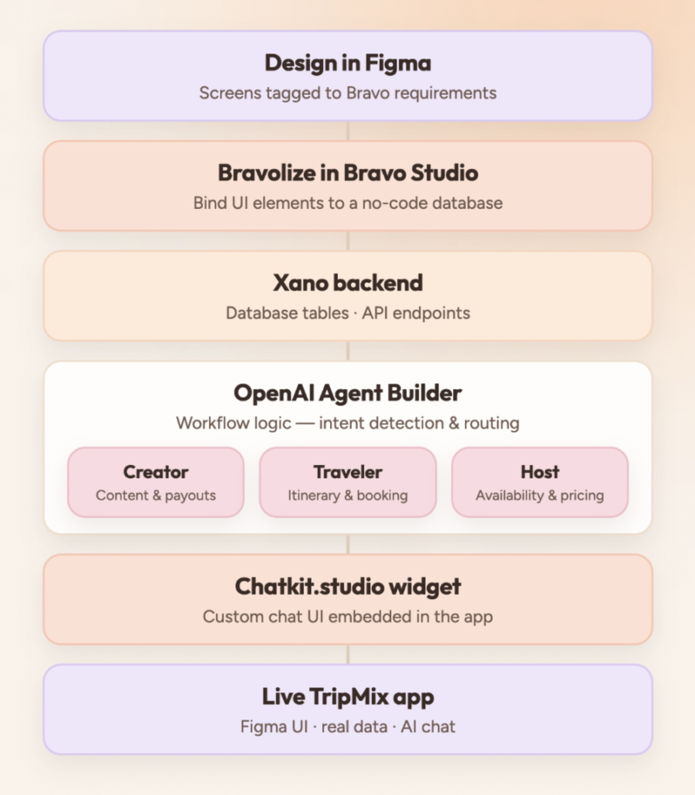
Section 7
A full app, no traditional front end
Bravo Studio turns Figma prototypes into production React Native, so I tagged every layer for Bravo and bound the UI straight to the database.
- Figma. Screens tagged to Bravo's requirements.
- Bravo Studio. UI elements bound to a no-code database.
- Xano. Database tables and API endpoints.
- OpenAI Agent Builder. Intent detection and routing, in a custom chat widget.

Section 8
One chat, three paths
An in-app chat detects what you want and routes you to one of three personas, each with its own agent and its own result.
- Travel creator. Public, sellable travel plans.
- Traveller. Private, dated itineraries.
- Host. Group packages, with extra screens to prepare travellers.
- Separate contexts, conditional paths and modular agents keep it easy to update
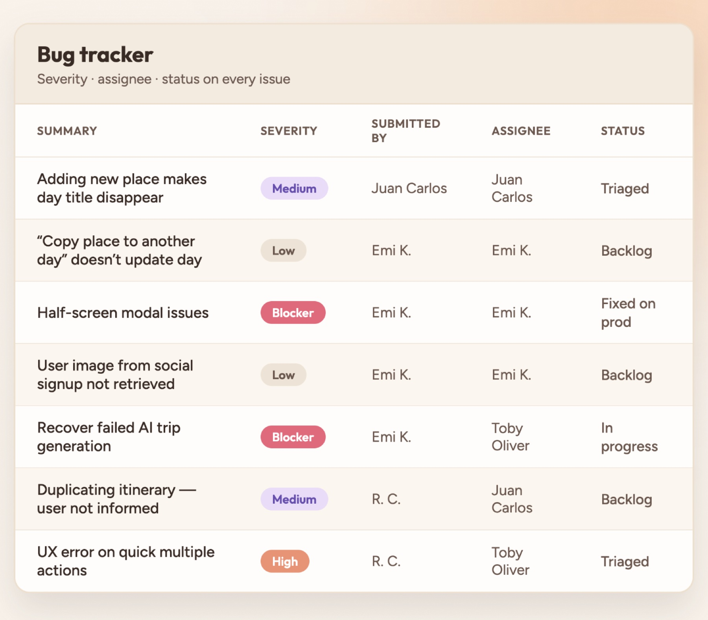
Section 9
Triage, then launch
Every issue went into a shared tracker with severity, details, owner and status. I triaged with the team and we cleared every blocker before launch.
After launch, App Store analytics showed engagement and drop-off, and interviews explained why. We measured task success three ways:
- Completion. Did people finish what they set out to do?
- Errors. Where did they struggle?
- Efficiency. How long did key actions take?
Section 10
Onboarding, AI trips and the travel shop
The AI builds an itinerary from almost anything: social posts, blog links, video clips, images or plain text.
Your profile holds your trips, saved experiences and your travel shop, a Stripe-powered storefront where others can buy your itineraries.
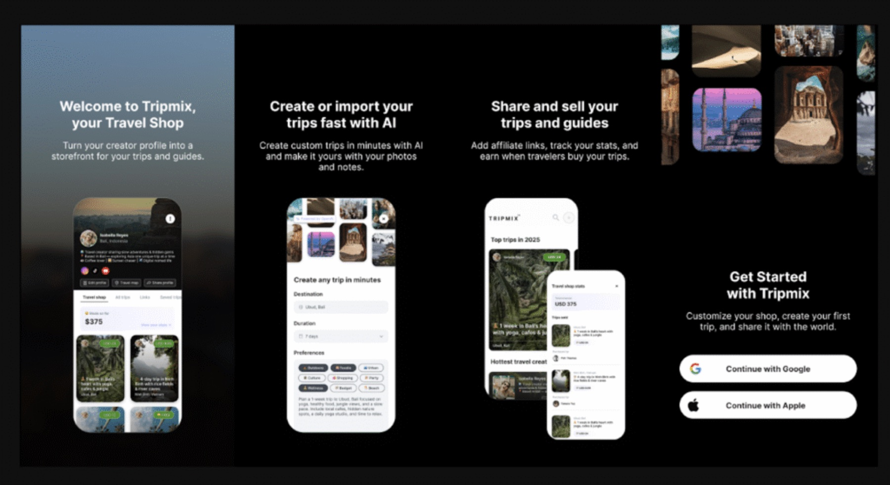

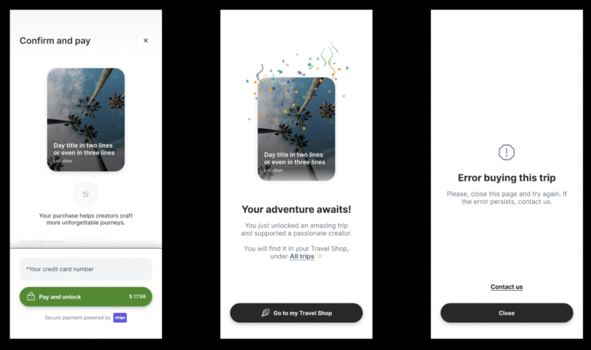
Section 11
Clearer trip cards
Prices sat on both sides of the cards, icons were confusing and the avatar was often missing. The fix: the avatar always shows, and plain public and private tags replace the icons.
Before
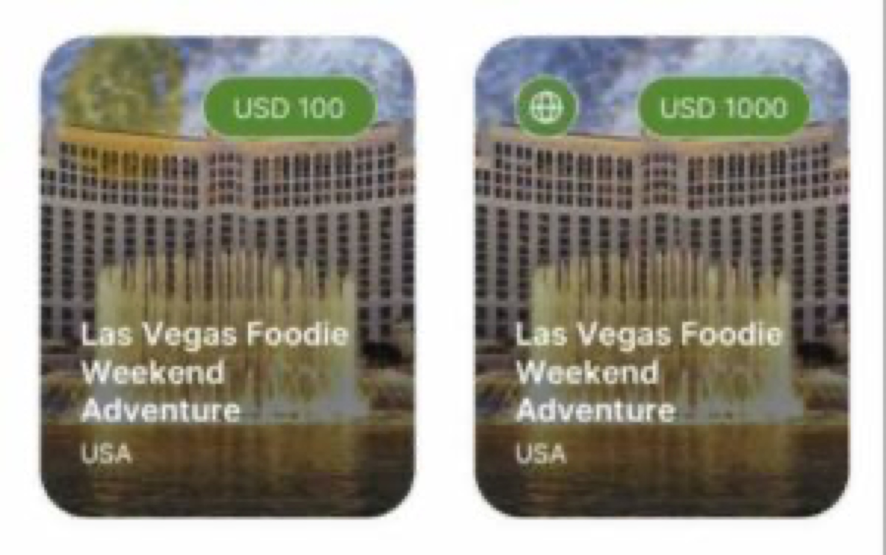
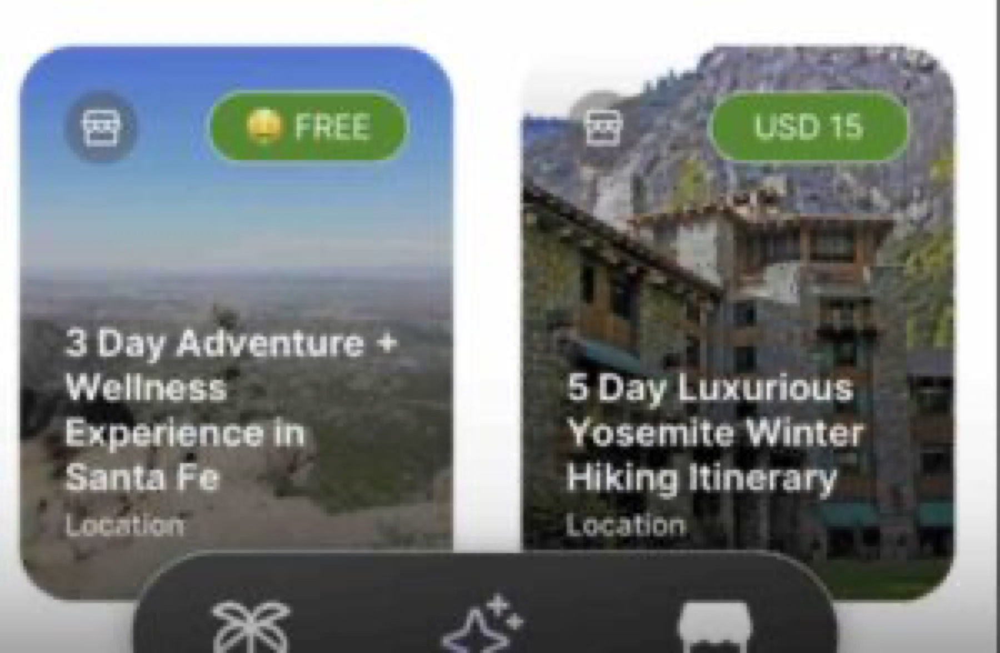
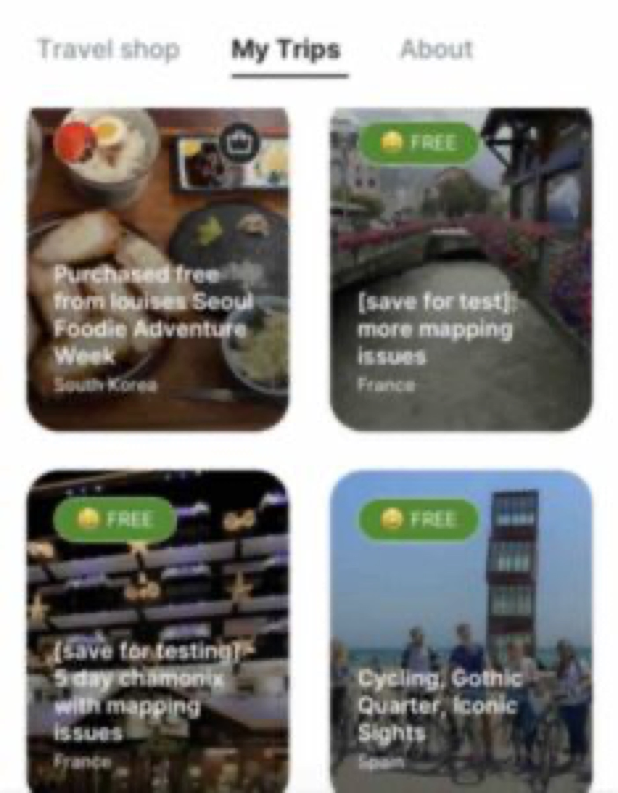
After
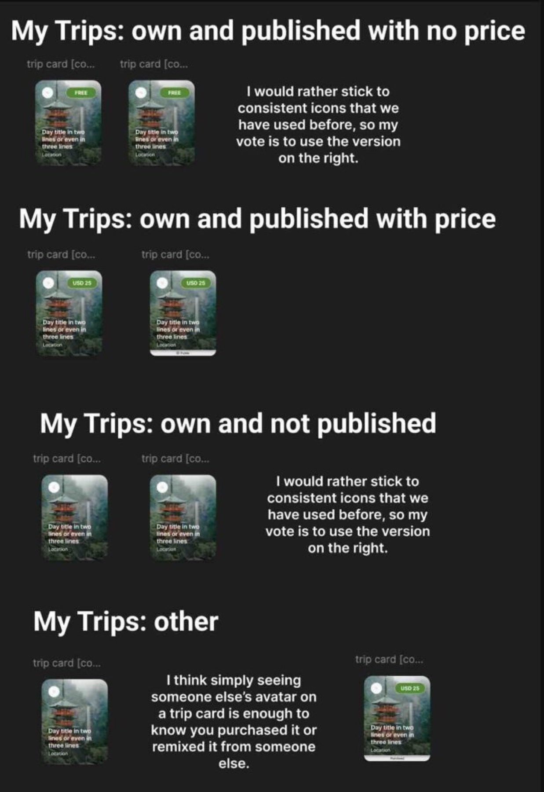
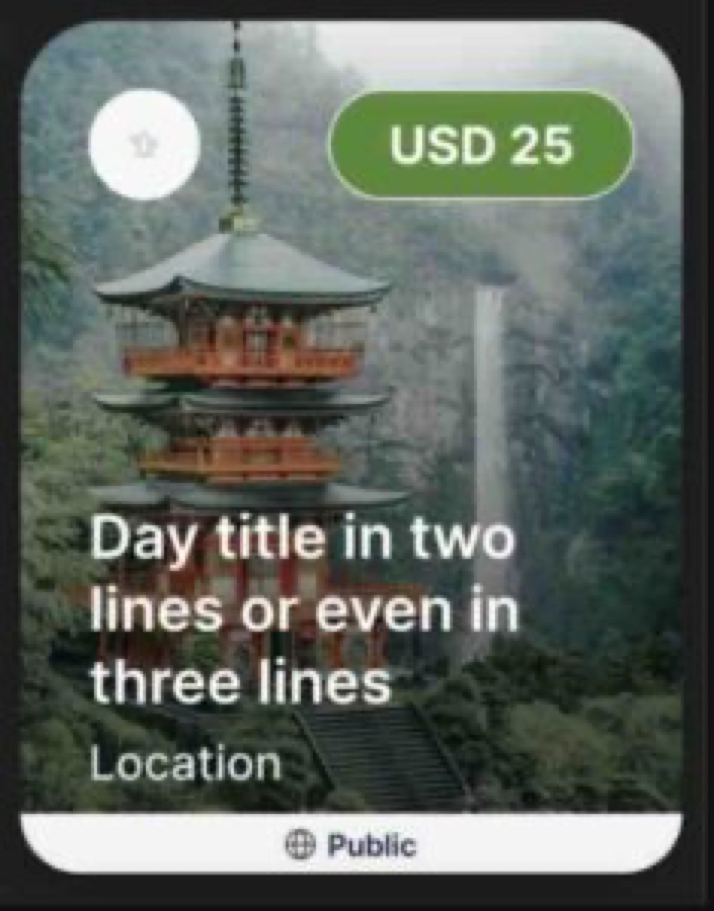